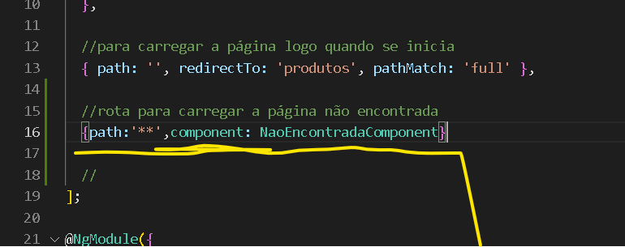
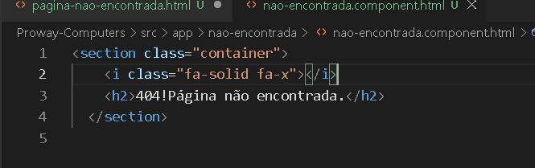
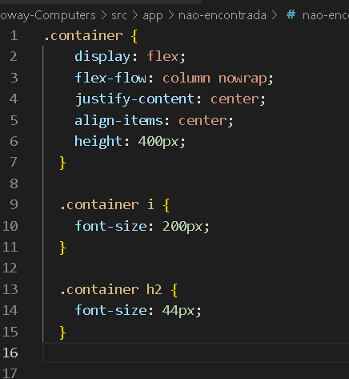
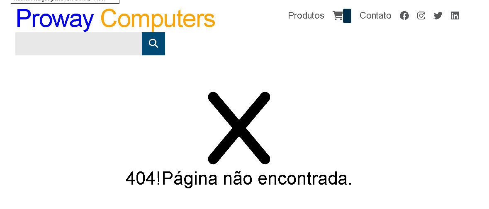

Página Não Encontrada
Crie um novo componente, comando ng g component nao-encontrada.
Você deve estar dentro da pasta do projeto.
Adiciona ele no app-routing.module.ts para criar uma rota desse componente
Como está na imagem abaixo:

Vamos deixar essa página mais bonita.
Vá no componente nao-encontrada.component.htm, e adiciona essas tags:
"section" classe = "container",dentro dela,coloque um iconi,
"i" class="fa-solid fa-x",feche o "i", e abaixo dele,
"h2" com o texto: "404!Página não encontrada.".
Fecha o "section", e prontinho.
Como está na imagem abaixo:

Na pasta "Aula 6F - Criando a página não encontrada..", tem um componente CSS,
com o nome nao-encontrada.component.css
coloque ele no lugar do orginal do projeto, pois ele já tem os estilos dá página.
Veja a imagem abaixo do "style", que tem na pasta e deve ser colocados:

Prontinho, agora se o usuário digitar algo errado, irá aparecer essa página!
Veja como fica na página:
